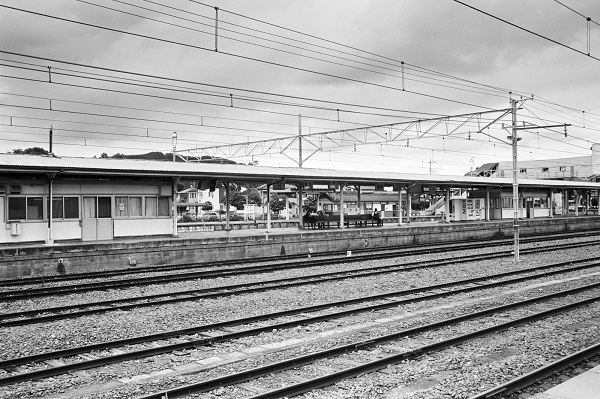
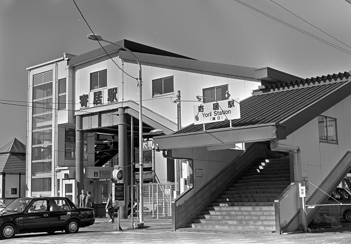

寄居駅 Yorii
玉淀駅←← 東上線
折原駅←← 八高線 →→ 用土駅
桜沢駅←← 秩父鉄道 →→ 波久礼駅

2018/10 ﾐﾉﾙﾀCLE ｽﾞﾐｸﾛﾝ35mm ｱｸﾛｽ

2017/9 ﾐﾉﾙﾀCLE ｽﾞﾐｸﾛﾝ35mm ｱｸﾛｽ

2017/9 ﾐﾉﾙﾀCLE ｽﾞﾐｸﾛﾝ35mm ｱｸﾛｽ

2017/9 ﾐﾉﾙﾀCLE ｽﾞﾐｸﾛﾝ35mm ｱｸﾛｽ

2016/11

2016/11 PentaxLX Planar 1.4/50ZK Acros

2016/11 PentaxLX Planar 1.4/50ZK Acros

2014/7

2014/7